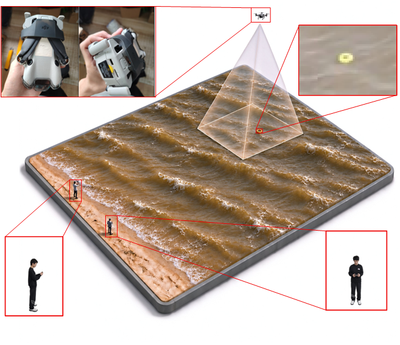
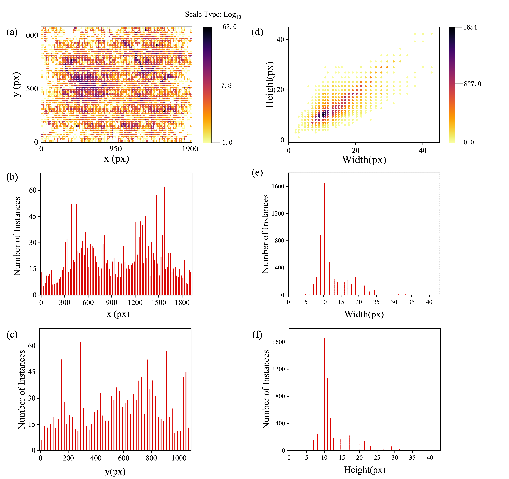
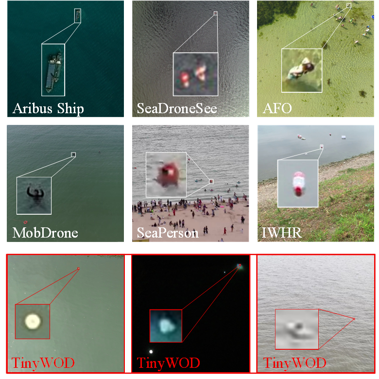
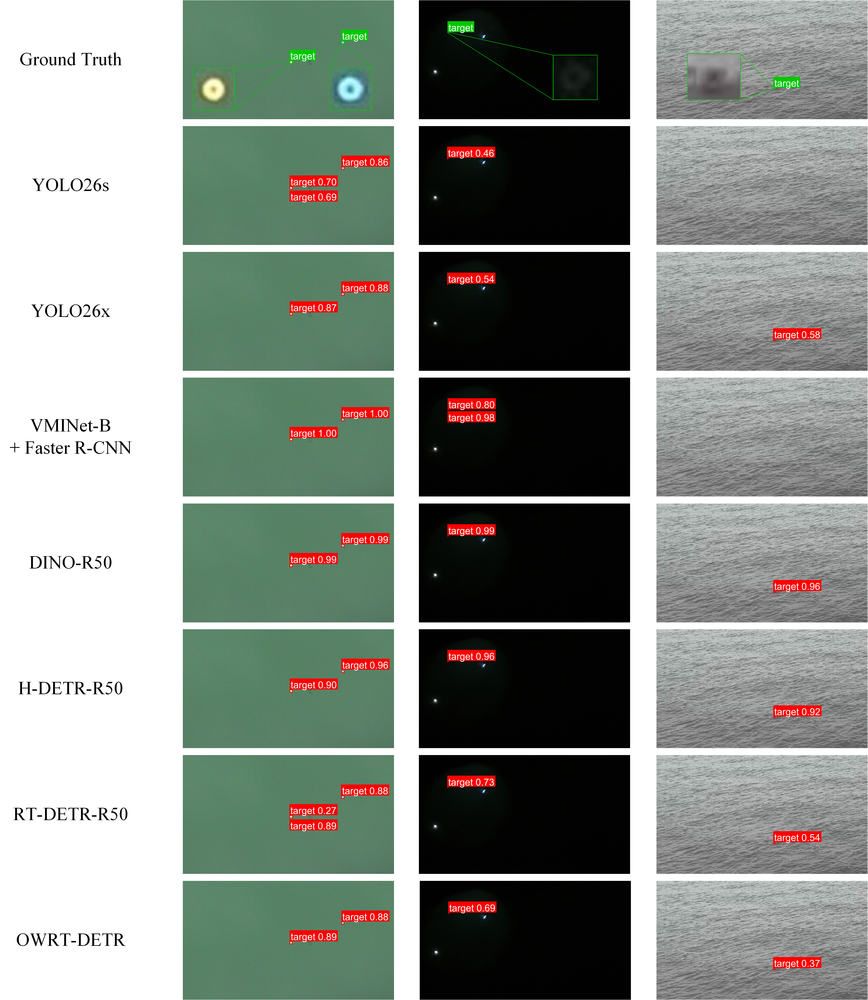

TinyWOD
A Tiny Object Detection Dataset for High-Altitude Open-Water Search and Rescue
Beihang University
Large aerial platforms often operate above 1.5 km to improve the efficiency of open-water search and rescue (OW-SAR). However, long imaging distances, wide fields of view, and limited sensor resolution reduce objects to a few pixels, increasing their susceptibility to environmental interference and making detection harder than for conventional small objects. To our knowledge, existing datasets focus on low-altitude scenarios and do not support automatic detection at 1.5–2.0 km. We therefore present TinyWOD, a tiny object detection dataset for high-altitude OW-SAR using lifebuoys as detection targets. It comprises 11,359 manually annotated images and 19,505 annotated instances spanning diverse environments, lighting conditions, water colors, and surface ripples. Compared with existing datasets, TinyWOD contains much smaller objects and a substantially higher proportion of tiny instances; its average equivalent side length (ESL) is 12.7 pixels, with 76.96% of instances having ESLs below 15 pixels, reflecting actual high-altitude water-rescue imaging conditions. We define APtiny, a tiny object detection metric, and benchmark mainstream and state-of-the-art networks using this and conventional metrics. All evaluated networks effectively detect tiny waterborne objects, demonstrating TinyWOD’s reusability and utility. We expect this dataset to support research on tiny object detection in high-altitude OW-SAR.
Data Acquisition
Considering that targets in high-altitude OW-SAR imagery occupy only a few pixels and that UAV flights at such altitudes entail substantial costs and are subject to strict airspace restrictions, we reduced the physical dimensions of lifebuoys and acquired images at shorter viewing distances to approximate the projected size of full-sized lifebuoys. To determine the appropriate target size, camera parameters, and acquisition distance, the pinhole camera model was used to relate target size to acquisition geometry. Based on these relationships, lifebuoy scales of 10%–100% were evaluated, with 11% selected as the closest approximation to the apparent size of a standard 72 cm lifebuoy viewed from approximately 1.5 km. In this way, the apparent object scale is reproduced using scaled-down targets and matched imaging geometry rather than by capturing imagery directly from a 1.5 km altitude.
Images were collected using two types of devices to capture different viewing perspectives. UAVs equipped with downward-facing cameras operated at altitudes of up to 120 m above the water surface under approved flight permits, capturing top-down views. Fixed cameras mounted on dikes 5 m above the water surface captured oblique views from the shore. Both camera setups used zoom lenses, whose focal lengths were adjusted so that most targets had a projected object size of roughly 3–15 pixels. All data were collected from water bodies in Hangzhou, Jiaxing, and Shaoxing, Zhejiang Province, China, which provided different water colors and surface conditions.

Dataset Statistics
TinyWOD contains 11,359 images at a resolution of 1920×1080 and 19,505 annotated lifebuoy instances in a single object category. The dataset was partitioned into training, validation, and test sets at a ratio of 7:2:1, containing 7,828, 2,222, and 1,309 images, respectively. The split was stratified by water body, recording time, and acquisition platform to ensure that each subset contained images from different water-surface environments and observation conditions. All images extracted from the same video were assigned to a single subset to reduce the risk of temporal overlap between splits and support more reliable comparisons among detection methods.
Dataset Split
| Split | Images |
|---|---|
| Training | 7,828 |
| Validation | 2,222 |
| Test | 1,309 |
| Total | 11,359 |
Collection Regions
| Region | Images |
|---|---|
| Hangzhou | 2,212 |
| Jiaxing | 7,007 |
| Shaoxing | 2,140 |
Key Statistics
| Statistic | Value |
|---|---|
| Annotated instances | 19,505 |
| Object categories | 1 (lifebuoy) |
| Average equivalent side length (ESL) | 12.7 px |
| Instances with ESL < 15 px | 76.96% |
| Mean bounding-box width | 12.96 px |
| Mean bounding-box height | 12.53 px |
| Images with at least one object | 93.47% |
| Negative images (no object) | 6.53% |
| Images with two or more objects | 23.27% |
| Maximum objects in a single image | 15 |
Hangzhou featured green water, with footage recorded during both daytime and nighttime. Jiaxing was characterized by yellow water and rough surface conditions, while Shaoxing had blue water. Footage from Jiaxing and Shaoxing was collected during daytime.
Of the images in TinyWOD, 93.47% contain at least one annotated object and the remaining 6.53% are negative images. Most images contain exactly one object, while 23.27% contain two or more, with a maximum of 15 objects in a single image. To characterize the spatial distribution of objects, the centers of the annotated bounding boxes were mapped onto a common 1920×1080 image plane using 20×20-pixel grid cells. The horizontal coordinates range from 2.5 to 1918.0 pixels and the vertical coordinates from 3.0 to 1078.5 pixels, with the mean object center at (975.72, 552.68) pixels lying close to the geometric center of the frame. The object-size distribution is concentrated at small scales, and the mean bounding-box width and height are 12.96 and 12.53 pixels, respectively.
The annotations are provided in COCO, YOLO, and Pascal VOC formats to support training and evaluation with the corresponding object detection frameworks without additional format conversion:
- COCO JSON
- YOLO TXT
- Pascal VOC XML

Spatial and bounding-box size distributions in TinyWOD: (a) spatial distribution of object centers aggregated across the entire dataset (log scale), (b) distribution of object-center x-coordinates, (c) distribution of object-center y-coordinates, (d) joint distribution of bounding-box width and height, (e) distribution of bounding-box widths, and (f) distribution of bounding-box heights.
Data Visualization
Visual examples illustrating the characteristics and challenges of tiny object detection in open-water environments.

Benchmark
To assess the usability of TinyWOD for training and evaluating object detectors, seven representative detectors spanning one-stage, two-stage, and end-to-end Transformer methods were benchmarked on an NVIDIA GeForce RTX 5090 GPU. All detectors were evaluated using the COCO protocol, and average precision (AP), AP50, AP75, APsmall, and average recall (AR) were used to assess detection performance.
Because 99.75% of TinyWOD’s instances have a bounding-box area below the 322 pixels2 threshold, APsmall nearly coincides with AP and does not isolate the tiny objects at the core of this dataset. We therefore define an additional metric, APtiny, restricted to objects whose annotated bounding box has ESL s = √(wh) < 15 pixels, where w and h are the annotated width and height in the original image coordinate system.
| Method | Params (M) | GFLOPs | FPS | AP | AP50 | AP75 | APsmall | APtiny | Precision | Recall | AR100 |
|---|---|---|---|---|---|---|---|---|---|---|---|
| YOLO26s | 9.95 | 22.5 | 407.3 | 0.404 | 0.689 | 0.436 | 0.403 | 0.320 | 0.650 | 0.558 | 0.492 |
| YOLO26x | 55.64 | 209.1 | 220.9 | 0.443 | 0.723 | 0.494 | 0.442 | 0.367 | 0.789 | 0.595 | 0.513 |
| VMINet-B + Faster R-CNN | 49.12 | 97.3 | 42.3 | 0.282 | 0.587 | 0.252 | 0.281 | 0.171 | 0.697 | 0.538 | 0.351 |
| DINO-R50 | 46.82 | 983.9 | 45.1 | 0.386 | 0.713 | 0.368 | 0.385 | 0.300 | 0.476 | 0.416 | 0.501 |
| H-DETR-R50 | 47.78 | 343.4 | 25.0 | 0.431 | 0.788 | 0.418 | 0.430 | 0.351 | 0.787 | 0.669 | 0.553 |
| RT-DETR-R50 | 42.73 | 68.5 | 110.6 | 0.423 | 0.806 | 0.422 | 0.422 | 0.341 | 0.505 | 0.452 | 0.518 |
| OWRT-DETR | 44.29 | 156.2 | 170.7 | 0.512 | 0.814 | 0.572 | 0.512 | 0.440 | 0.665 | 0.559 | 0.596 |

Download & Usage
The TinyWOD dataset is available at Kaggle, and the benchmark and evaluation code used to produce the results in the Technical Validation is available at GitHub.
Usage Notes
Researchers should use the provided training, validation, and test splits when comparing detection methods to ensure the fairness of the evaluation.
License
The dataset is available under the Creative Commons Attribution-NonCommercial-ShareAlike 4.0 International (CC BY-NC-SA 4.0) license.
Citation
If you find TinyWOD useful in your research, please cite our paper.
Official citation information will be updated upon publication.